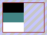

![[Test image]](./images/png/rgb16_t_bk.png)
Not all possible results are shown; there are too many combinations of background colors and shapes of the opaque region. However, I intend to include every result that actually occurs in a mainstream browser. If I am missing any, please let me know.
It's come to my attention that my images which show how alpha transparency should look are not quite perfect in regard to precisely how transparent they are at various points. Rather than try to modify this page to test gamma correction issues as well, I've created a separate test page for that.
This test page was constructed by
Jason Summers.
Comments may be emailed to jason1@pobox.com.
There are
other test
pages listed at the PNG web site.
Expected result:
(T1) 8-bit palette, includes background color:
(T2) 8-bit palette, no background color:
(T3) 32-bit RGBA, includes background color:
(T4) 32-bit RGBA, no background color:
(T5) 64-bit RGBA, includes background color:
(T6) 64-bit RGBA, no background color:
Expected result:

(T7) 24-bit RGB, binary transparency, includes background color:
(T8) 24-bit RGB, binary transparency, no background color:
(T9) 48-bit RGB, binary transparency, includes background color:
(T10) 48-bit RGB, binary transparency, no background color:
Expected result:
(G1) 16 bpp grayscale (8 gray + 8 alpha), includes background color:
(G2) 16 bpp grayscale (8 gray + 8 alpha), no background color:
(G3) 32 bpp grayscale (16 gray + 16 alpha), includes background color:
(G4) 32 bpp grayscale (16 gray + 16 alpha), no background color:
Expected result:
(G5) 8 bpp grayscale (8 gray), includes background color:
(G6) 8 bpp grayscale (8 gray), no background color:
(G7) 16 bpp grayscale (16 gray), includes background color:
(G8) 16 bpp grayscale (16 gray), no background color:
(M1) 8-bit palette, no transparency, includes background color:
Expected result:
![[Test image]](./images/png/result_no.gif)
(M2) (4-bit) palette, binary transparency only, no background color:
Expected result:
(This tests a few things that may have slipped through the cracks.)